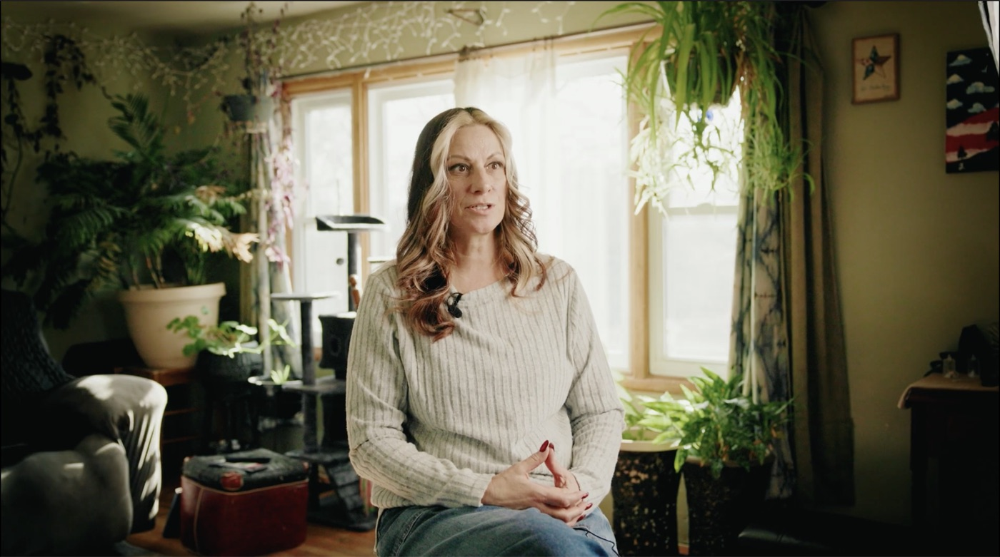
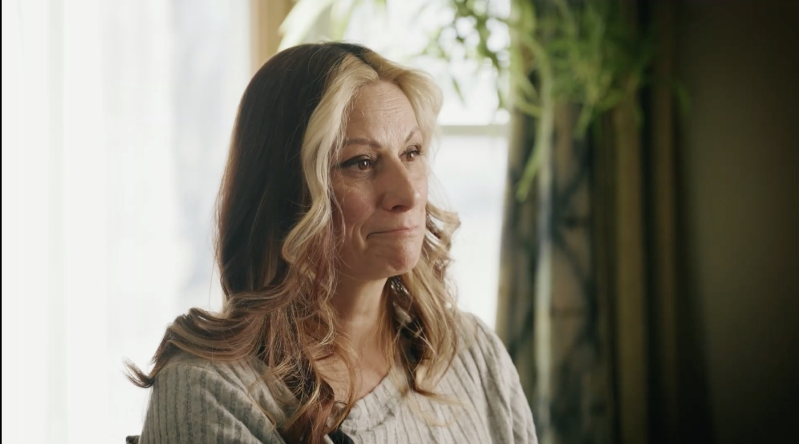
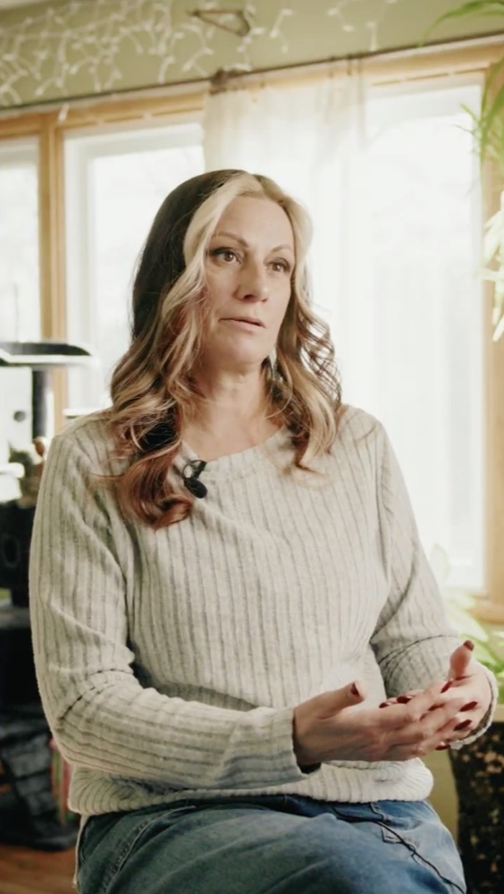

The Ad Creative Nobody Else
in This Category Can Run
You want to be the biggest brokerage in the country by 2030. The math says that's actually available: no firm holds even 5% of this market today, and roughly $5 trillion in boomer-owned businesses comes up for sale over the next decade. The winner is whoever sellers already trust before the first phone call.
Before writing this, I pulled every active video ad targeting US business sellers in Meta Ad Library. What I found changes what these 12 videos should be. Here's the data, the creative plan built on it, and how each video earns its keep in paid, organic, and AI search.
I Pulled the Live Auction First
July 9, 2026. Meta Ad Library, US, active video ads, searched "sell your business," "business broker," and "what is my business worth." About 120 live ads reviewed. These are real advertisers spending real money right now, with start dates, because an ad that's been running for months is an ad that's paying for itself.
| Advertiser | Running since | Creative angle |
|---|---|---|
| Catalyst OGC | Sep 2025 · 9+ months | "You built a great business. Don't let blind spots kill the deal." Exit-prep pitch to camera. |
| Jeff Powers, Exit Planner | Oct 2025 · 8+ months | Education-led: "Still valuing your business off your tax returns? You're not ready to scale or sell." (4:16) |
| 10x Business Broker M&A | Mar 2026, many variants | Free valuation offer. "The #1 reason owners don't sell: they say they'll work till they die." |
| ExitMap (Long/Hoffman) | Apr–May 2026, many variants | "Exit for 2–5x more than a broker would get you." |
| First Choice Business Brokers | May 2026 | "Find out how much your business is worth. 100% confidential. No obligation." (0:34) |
| Leavitt-Burke Holdings | May 2026 | Money math: "$200,000 in profit… could be worth $1,000,000." |
| SMB Deal Hunter | Jun 2026, multiple | "25 years in. You're tired. Your body knows it. Your wife knows it." Plus "Skip The Business Broker." |
| Rejigg | Jun–Jul 2026 | "No brokers, no noise, no wasted time." Private buyer network. |
| Wisable | Jul 2026 | Vertical-targeted: "If you own an independent auto repair shop doing seven figures… we bring the buyers." |
| Michael Shea P.A. | Jul 2026 | Credibility stack: "$1 billion in business sales, over 20 years." (1:41) |
Every advertiser name links to the live ad in Meta Ad Library. Click through and check my work.
Across ~120 live ads: brokers talking to camera, stock footage, valuation calculators. Not one ad built around an actual seller who closed. The best creative in this category hasn't been made yet.
"Skip the broker." "2–5x more than a broker." "No brokers, no noise." The category's biggest objection is broker distrust. A broker saying "trust me" can't answer that. A seller who got paid can.
The ads that survive months of spend open with second-person pain, money math, or a direct question, and close with a free valuation plus a confidentiality promise. We don't have to guess what works. It's public.
Each Shoot Is Engineered to Perform, Not Just Look Good
A testimonial that only lives on your website is a trophy. These are built as ad creative from the first minute of the interview. Three mechanics make that true:
Viewers decide in under 2 seconds; a 30% three-second view rate is the paid-ads benchmark. So I don't hope a hook shows up. I interview for it. Every seller session is run to capture 3–5 openable moments in their own words, each matching a hook type already proven in this auction: the pain hook, the money-math hook, the direct question. If the seller says something better than the plan, that becomes the ad. It usually does.
Every long-running advertiser in the table above runs multiple versions of the same creative. Iteration is how ads win. I structure the interview so every answer stands alone (the seller folds the question into the answer). A 60–90 minute session cuts into one flagship film plus 8–12 vertical cutdowns: 3–5 hooks × 2–3 bodies. Your media buyer gets a testable matrix per seller, not a single video to pray over.
And because the 12 sellers span landscaping, dumpsters, electrical, automotive, glass, and more, you get a vertical-matched ad for each trade. That's the same targeting play Wisable is running right now with its auto-shop-only creative, except with a real owner from that trade on screen.
The data is one-directional: authentic, UGC-style ads pull roughly 4x the click-through at about half the cost-per-click of polished brand ads, testimonials lift conversions by up to a third, and over-scripted "ring light" testimonials are actively dying in the auction. So no seller ever gets handed a line. I research them for a week, we talk before I fly out, and on the day it's a conversation: cinematic lighting, real location, real speech patterns. It looks premium and reads true, and those aren't in tension when it's shot right.
The frame, exactly as I build it
Two cameras, one operator. The wide is composed so the same take reframes cleanly to 9:16. Every interview is shot for the feed, not cropped for it as an afterthought. These are real frames from a recent shoot, straight out of the grade.

Subject off the center line with room to look into, eyeline just off the lens, soft key on the short side of the face. Her own space lit for depth behind her. That's the shot that says this is real.

Roughly 45° off the A-cam axis, background falling off. Covers every edit point, which is what makes a tight cutdown invisible instead of jumpy.

The A-cam wide keeps the seller inside the vertical crop line, so cutdowns don't lose the frame. Hook text sits top-center where the eye lands, captions burn in above the platform UI (85% of feed video plays muted), and the right rail stays clear of Reels buttons. Every cutdown ships captioned, color-graded, and platform-safe.
The BizDepot Seller Interview
Seven acts · about 60 minutes · every answer given in a complete sentence
This is not a documentary about a guy who sold his landscaping company. It's a testimonial for BizDepot, told by someone who used you. His story is the evidence, not the subject. The acts are ordered the way trust actually gets built on camera: comfort first, then the situation the viewer recognizes, then everything BizDepot did about it.
No seller reads lines. I build the question plan per seller: a week of research on them and their business, facts verified, a group text with them and your team before I fly out. A 30-year landscaping company and a 4-year dumpster business don't get the same questions. They get the same seven acts.
The three filled acts are where BizDepot gets proven: how you earned the trust, what you took off his plate, and what you closed. They carry the bulk of the running time.
Get them talking about the thing they know best. Nothing here is hard. By the end of this act they've stopped performing.
What I push for: one specific detail. The first truck, the first hire, the year they almost lost it. That's the B-roll anchor and usually the opening line of the film.
The viewer has to see their own situation on screen. Three beats: why they wanted out, the realization they had no idea how, and the hesitation that kept them from calling anyone.
What I push for: the admission that they were guessing. "I thought it was worth about a million because a guy in my industry sold for that" is gold. It sets up the payoff in Act 5. The last two questions matter just as much: every prospect watching has that same hesitation, and it needs to be named and killed by a peer rather than answered by you.
Credibility. This is the act where a stranger becomes someone worth trusting.
What I push for: speed and specifics. "I called on a Tuesday and had a valuation by Friday" beats "they were really responsive" every single time. Names too, where the seller remembers them. A named person on your team is worth more than the company name.
This is the one that separates BizDepot from an owner selling it himself. It's the argument for your fee, made by someone who paid it.
What I push for: a list. I let them ramble here. The buyer vetting, the paperwork, the confidentiality, the negotiating, the tire-kickers they never had to meet. That list is the ad.
Proof.
What I push for: the near-death moment. Every deal has one. That story is the single most persuasive thing captured all day, because it's the exact fear every seller carries and it ends with your team fixing it.
The arc can't end at the signature. Nobody sells for the check. They sell for what comes after it, and that's what the emotional close is cut against.
What I push for: that last question, harder than it looks on paper. Legacy fear stops a lot of deals. Owners won't say out loud that they're worried about what happens to their people. A seller answering it on camera removes an objection your ads can't otherwise touch.
The close. They shift out of storytelling and into talking to one person, and the camera changes with them. Direct-to-lens here changes the whole feel of the cut.
What I push for: short. I tell them explicitly: "these need to be tight, ten seconds each." Then I take three passes at each one. This act alone is your entire library of :15s.
The one rule, said twice: answer without referencing my question. Not "about eight months." Instead: "the whole thing took about eight months from first call to closing." Every answer has to stand alone or it can't be cut.
Generic praise gets cut on the spot. "They were great" → "Give me the moment you're thinking of when you say that."
Redundant audio. Lav and shotgun, both rolling, both usable. There is no second take of a real answer.
Silence for a beat before and after every answer, and I nod instead of saying "mm-hm." Both exist so the edit has clean handles.
One thing I need from your team per deal: confirmation that the purchase agreement lets the seller state the sale price publicly. If it doesn't, Act 5 pivots to ratios: "more than I expected," "two and a half times my guess." That still works, but I need to know before the camera is up, not after.
Acts 1–2 produce the hooks: the guessed number, the almost-lost-it year, the reason he waited. Acts 3–5 produce the bodies, one cutdown per argument, so your media buyer can test "I had a valuation by Friday" against "I never missed a day of work" and find out which objection is actually costing you calls. Acts 6–7 produce the closes, and Act 7 alone yields a stack of :15s. That's how one 60-minute conversation becomes 8–12 testable ads instead of a single video.
On going off-script: I've run about 100 of these interviews. The plan above gets the footage the ads need; the best moment of the day is usually the one no plan saw coming. I follow it when it appears, then bring the conversation back. That instinct is the difference between coverage and creative.
AEO: Built to Be the Answer
Answer Engine Optimization: when an owner asks Google's AI Overviews or Perplexity "how do I sell my landscaping business," your content is the answer that gets pulled. Video is eligible for that, but engines read video as text: the transcript, the chapters, and the page it's embedded on. Three facts shape the plan:
Google AI Overviews cites YouTube ~30x more often than ChatGPT does. YouTube and Google surfaces are where video AEO pays.
Perplexity and AI Overviews together drive ~75% of YouTube citations in AI answers.
Correlation between view count and AI citation. A 200-view video that answers the question directly can beat a 500K-subscriber channel.
That last number is the opportunity: BizDepot doesn't need a big channel to win AI search. It needs videos that directly answer the questions owners actually ask. Which is exactly what a well-run seller interview is, so I structure it that way on purpose:
Question-framed segments. Interview sections map to real queries: "How much is a landscaping business worth?" "Can I sell without my employees finding out?" "Do I need a broker?" Each answer is a citable unit.
Full transcript with every video. The single highest-impact AEO asset, because the transcript is the text engines actually quote.
Chapters and timestamps named as questions, so engines can cite the exact segment.
A page-ready embed kit: VideoObject + FAQ schema and an FAQ text block for each video's page on bizdepot's site, connecting the video to crawlable text. Your web team pastes it in; done.
GEO: Built to Be the Brand AI Recommends
Generative Engine Optimization is the other half, and it's different: AEO gets your content quoted; GEO gets your brand named when someone asks ChatGPT or Gemini "should I use a business broker?" or "who sells plumbing businesses in the Carolinas?" By 2030, a large share of seller journeys starts with that question asked to an AI. Whoever the models name first gets the call.
The Princeton GEO study (KDD 2024, ~10,000 queries) measured what makes generative engines surface a source. The three biggest levers, each worth roughly 30–40% more visibility in AI answers:
Direct quotes from named people
Concrete numbers, not adjectives
Third-party corroboration
Look at what a seller-testimonial library produces natively: real quotations from named owners. Real deal statistics like timelines, industries and outcomes. And third-party corroboration, because it's the seller's own words on the record, not BizDepot talking about itself. The exact three things the research says AI engines reward, generated as a byproduct of filming.
How This Compounds Into 2030
In boomer-owned businesses coming up for sale over the next decade (McKinsey, 2026). ~6M ownership transitions by 2035.
Largest market share held by any US business brokerage (IBISWorld). "Biggest by 2030" is genuinely up for grabs.
Of boomer owners have any exit plan. Most of your 2030 market doesn't know it's sellable yet. These videos are how they find out.
A deal closes → I film the seller within weeks, while the story is fresh.
One shoot becomes 10+ assets → flagship for listing calls and the website, cutdown matrix for paid, transcript + schema kit for AI search.
Ads run vertical-matched → the roofing owner sees a roofing seller who got paid, not a broker's pitch.
More owners list → more closings → more testimonials → the library, the targeting, and the AI-search footprint all get bigger.
Competitors can't follow → they'd need your closed deals to make this creative. Every video widens the gap.
Hook rate against the 30% three-second benchmark. CPL by vertical. Which hooks and which sellers drive booked valuation calls. I review the numbers with your team after each batch, and the next round of interviews leans into what's converting. Twelve videos isn't the deliverable. It's twelve tests that make every following video cheaper and sharper.
One Operator, Full Package
Person on site. One flight, one hotel per trip, and a seller talking to a person, not performing for a crew.
Minutes to a full two-camera cinematic setup: lights, redundant audio, graded look.
Interviews run. Enough reps to know when to leave the question plan and when to come back to it.
Review My Work
Examples of past testimonial and brand video work.